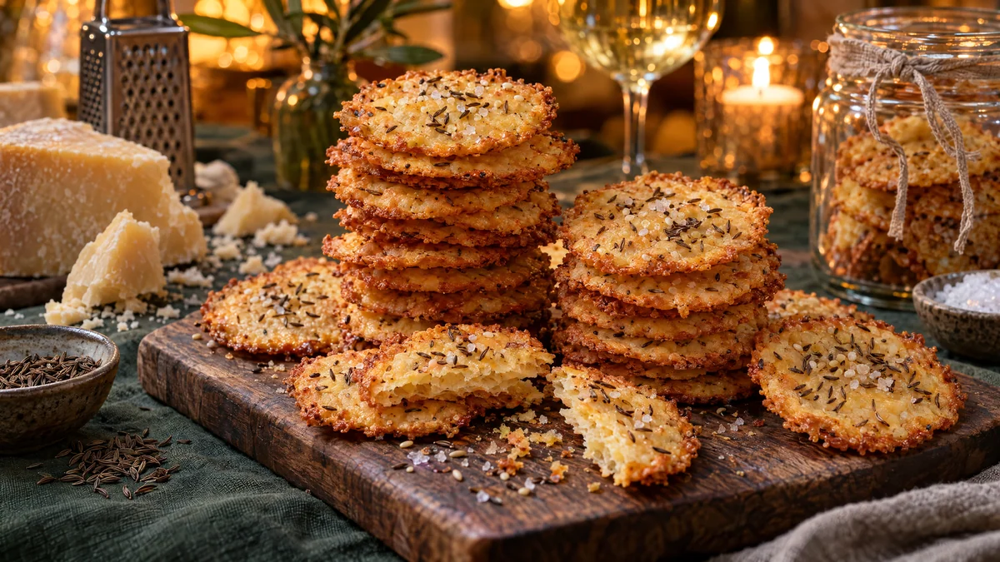

RESTFEST · RECEPTMingelmat & tilltugg · Fika & bakning
Smöriga ostkex på de sista ostkanterna
De hårda ostkanterna längst in i kylen, ett paket smör och lite mjöl. Allt rivs och arbetas ihop till en deg som rullas, skivas och gräddas till krispiga, smöriga kex med kummin, sesam och flingsalt. Ser ut som från en delikatessbutik och smälter i munnen.
- Förberedelse
- 15 min + 30 min i kylen
- Tillagning
- 12 min
- Portioner
- ca 40 kex
- Nivå
- Nybörjare
 Det här behöver du
Det här behöver du
Tryck på + vid det du behöver köpa.
Deg
Topping
Gör så här
- Skär bort vax och hård skorpa från ostkanterna och riv osten fint.
- Nyp ihop ost, smör i bitar, mjöl, salt och cayennepeppar med fingrarna, eller kör det kort i en matberedare, tills det blir en smulig massa. Tillsätt vattnet och arbeta snabbt ihop till en deg.
- Forma degen till en rulle, ca 4 cm tjock. Rulla in den i plastfolie och kyl i minst 30 minuter.
- Sätt ugnen på 200 grader. Klä två plåtar med bakplåtspapper.
- Skär rullen i skivor, ca 5 mm tjocka, och lägg dem på plåtarna med lite mellanrum.
- Pensla kexen med ägg och strö över kummin, sesamfrön och några flingsaltkorn.
- Grädda i mitten av ugnen i 10–12 minuter, tills kexen är gyllene i kanterna. Låt dem svalna på plåten, de blir krispiga först när de har svalnat.
Dekoration och servering
- Stapla kexen i höga, lätt sneda torn på ett träbräde, så att de gyllene kanterna syns.
- Servera till ett glas vin, en kall öl eller som tilltugg på mingelbordet.
- Fyll en glasburk med kex och knyt ett snöre runt, en fin värdinnepresent.
- Kexen håller i ca 1 vecka i en lufttät burk. Degrullen kan frysas och skivas direkt från frysen.
Mått och ugnstemperaturer
Måtten är svenska (dl, msk, tsk, krm). Ugnstemperaturerna gäller vanlig ugn med över- och undervärme; med varmluft, sänk med 20 grader.